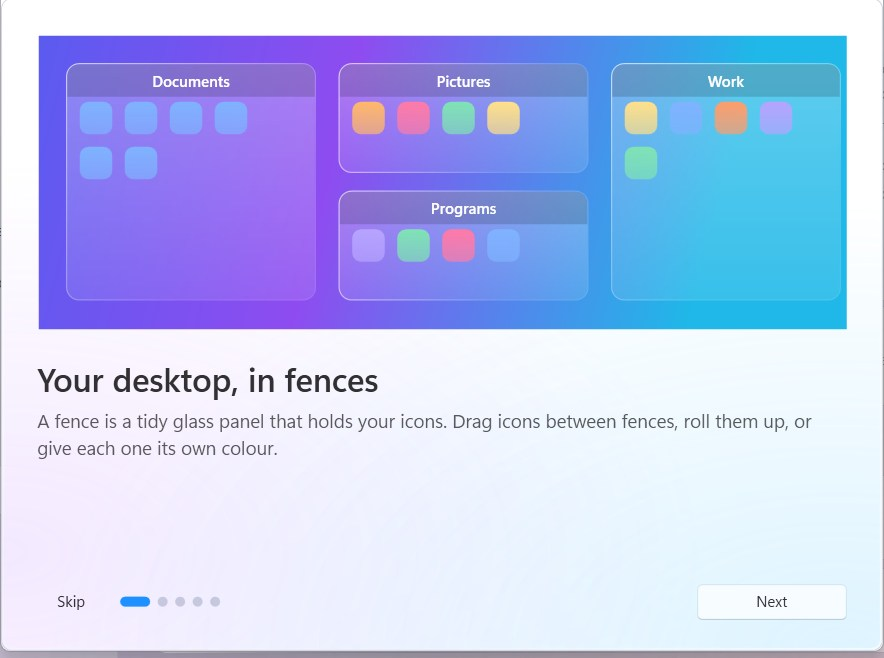
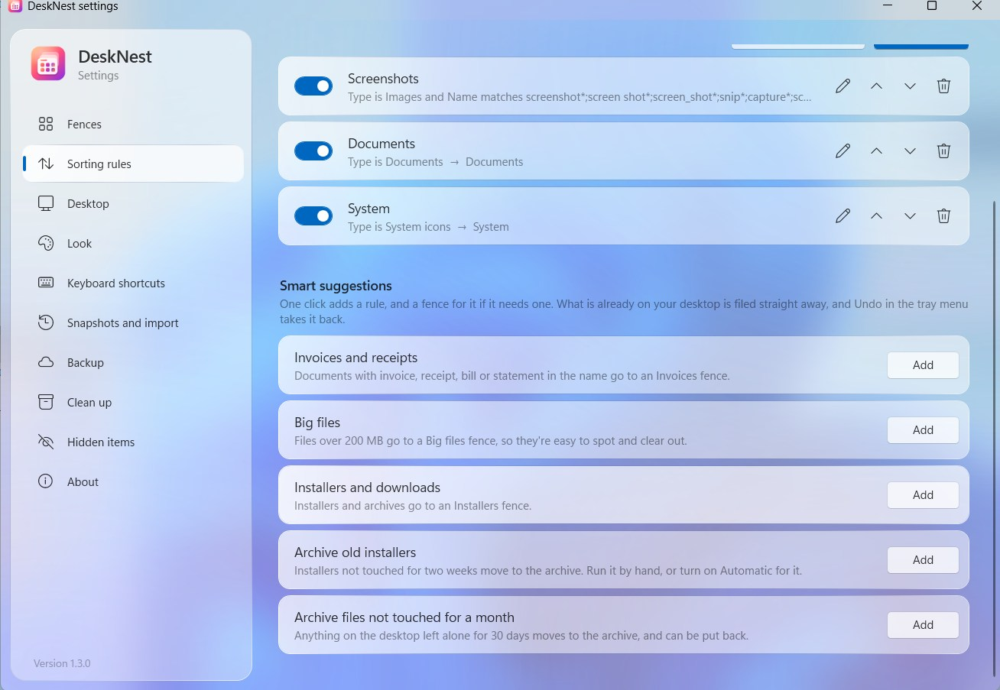
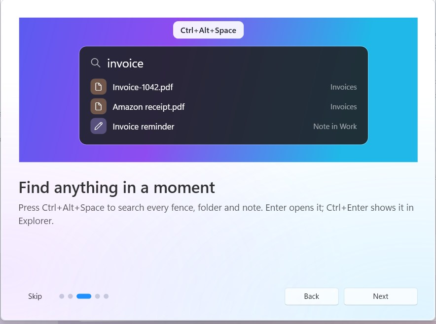
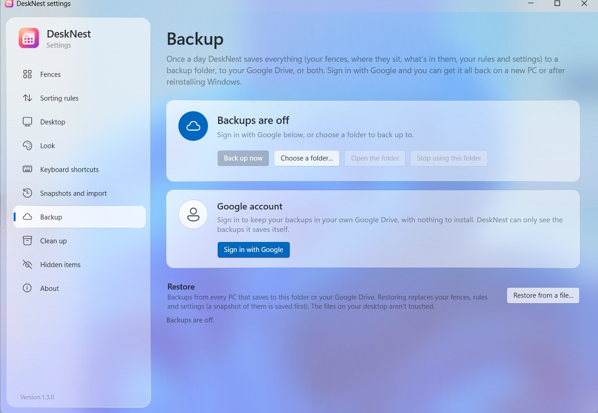
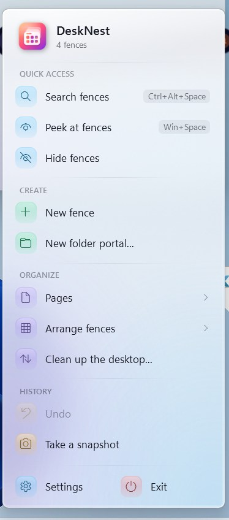

Fences that look like glass
A fence is a calm panel that holds a group of icons. The desktop blurs through it, lit by a soft rim of light, and it fades away when you switch pages.
- Draw a fence by right-dragging on the desktop
- Drag icons between fences, roll them up, or make tabs
- Pick any colour, with a real colour picker

Sorting that does the work
Rules file new items by what they are. Add ready-made ones in one click: screenshots, invoices and receipts, big files, installers.
- Rules can put icons in a fence or move files to a folder or an archive
- Every automatic move comes with an Undo button
- What's already on the desktop is filed straight away

Find anything in a moment
Press a hotkey to search every fence, folder portal and note. Open the result, show it in Explorer, or jump to the fence it lives in.

Backed up, and easy to bring back
Sign in with Google and DeskNest saves a backup of your whole layout once a day to your own Drive. On a new PC, sign in and restore.
- No extra app to install
- DeskNest only sees the backup files it saves itself, never the rest of your Drive
- Or back up to any folder you choose

Always one click away
The tray menu groups everything by what it does: search, peek, create, arrange pages, undo, snapshots. Pages and arrangements open as their own glass panels.

Private by design
Everything stays on your PC unless you sign in to back up to your own Google Drive. No accounts, no ads, no tracking. Privacy policy
Made for Windows 10 and 11
No admin rights needed. Works with high-contrast themes and screen readers, and with several monitors.
Stays up to date
DeskNest tells you when a newer version is out, and installs it only after you click Update.